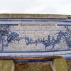
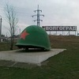

Достопримечательности Городищенского района
Городищенский район (официальный сайт  )
находится в пригородной зоне Волгограда, непосредственно около самого города.
Районный центр - поселок городского типа Городище.
По территории района проходят три федеральных трассы, в том числе и М6 «Каспий».
)
находится в пригородной зоне Волгограда, непосредственно около самого города.
Районный центр - поселок городского типа Городище.
По территории района проходят три федеральных трассы, в том числе и М6 «Каспий».
Городищенский район славен своим героическим прошлым. В период Сталинградской битвы на его территории шли ожесточенные кровопролитные бои. В районе находятся 2 уникальных памятника Волгоградкой области, посвященных Великой Отечественной войне – мемориальный комплекс «Солдатское поле» и военное мемориальное кладбище у с. Россошка, которые увековечили подвиг погибших солдат и мирных жителей.
 )
)
Интерактивная карта Городищенского района с достопримечательностями (увеличить )
1.Царицынская сторожевая линия
Царицынская сторожевая линия (Вал Анны Иоанновны) — это памятник комплексу оборонительных сооружений 18 века, перекрывавший перешеек между реками Дон и Волга от набегов кочевников Поволжья.
2.Мемориал в Россошках

Россошки — военно-мемориальное кладбище. Во время Сталинградской битвы деревни Россошки стали полем боя, на котором было пролито немало крови немецких и русских солдат.
3.Мемориал Солдатское поле

В братской могиле мемориала захоронена урна с прахом погибших солдат, останки которых были найдены при разминировании и вспашке поля, которое местные жители называли Солдатским.
4.Храм Всех скорбящих Радости

Комплекс датирован 1910 годом. Это единственный в Волгоградской области крестово-купольный храм в византийском стиле.
5.Памятный знак "Каска"
Памятный знак в честь советских воинов - защитников Сталинграда "Каска", установленный на въезде в город-герой Волгоград.